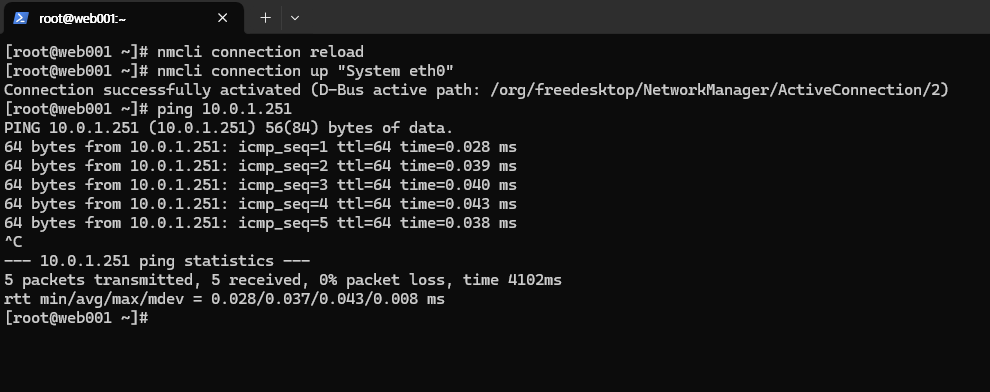

학습 목표
- 서버 추가 네트워크 인터페이스 설정
- Lnsvr1 eth0에 secondary IP 추가
1. 서버에 추가 IP 설정
- Services >server>network interface 선택
- web001 서버에 할당되어 있는 네트워크 인터페이스 선택 후 상단의 secondaryIP 버튼 클릭

- SecondaryIP 입력란에 ’10.0.1.251’ 입력 후 우측에 추가 버튼 클릭
- 하단의 설정 버튼 클릭
- web001 접속하여 네트워크 매니저 서비스 활성화 및 서비스 상태 확인
systemctl unmask NetworkManager.service systemctl start NetworkManager systemctl status NetworkManager - 네트워크 매니저로 Secondary IP 추가
nmcli connection nmcli connection modify "System eth0" +ipv4.addresses 10.0.1.251/32 - 변경 사항 적용 및 활성화
nmcli connection reload nmcli connection up "System eth0" - 10.0.1.251로 ping 시, 통신이 되는 지 확인
ping 10.0.1.251